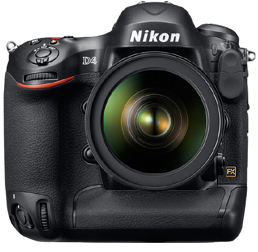
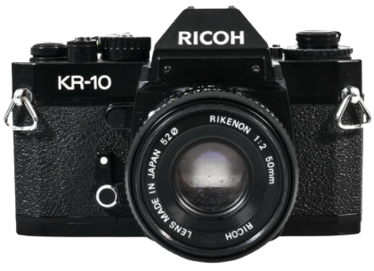

Back in 2014-2015 I started photography as a hobby to document things of interest to me.
The 1st Digital camera I used was a cannon 1100d, which I later swapped for a nikon d4.
Whilst using digital I always liked the look of film photo's, so I got a ricoh kr-10 to try out.
